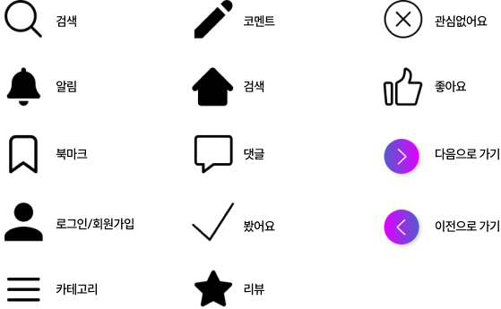

통합 OTT 플랫폼 작품 추천 및 검색 플랫폼
Overview
자동 스와이프 슬라이드
자동 스와이프 슬라이드를 적용하여 직접 넘기지 않아도 자동으로 정보를 얻을 수 있습니다.
기기에 따라 너비가 다른 반응형으로 제작했습니다.
무한 스와이프 슬라이드
무한 스와이프 슬라이드를 적용하여 좌우버튼을 통해 슬라이드를 적용하였습니다.
기기에 따라 너비가 다른 반응형으로 제작했습니다.
Plan
Background
- “이제는 가성비가 아닌 시성비”
- OTT 시장은 사용자수 기준 포화상태
- 공중파나 IPTV 등 기존 플랫폼 대비 OTT 서비스를 이용하는 비중이 더 커지고 있음
- OTT 관련 정보는 지인이나 동영상 채널을 통해 획득한 경우가 많음
- 24년 트렌드 분초사회
- 돈만큼 시간이 중요한 시대가 트렌드로 꼽히면서 시간을 아낄 수 있는 제품 및 서비스에 대한 소비자들의 관심도가 높아짐
- 시간을 절약하기 위해 영상을 2배속으로 시청하는 소비자들이 많아짐
Concept
핸드픽은 손쉽다는 뜻의 ‘Handy’와 고른다는 의미의 ‘Pick’을 결합하여, OTT 시리즈 및 추천 또는 통합 검색을 할 수 있는 플랫폼입니다.
Target & Keywords
- 타겟
- 20대~40대 소비자
- 자신이 보고 싶은 콘텐츠를 스스로 탐색하고 싶은 소비자
- 트렌드에 맞춰서 다양한 장르를 추천받고 싶은 소비자
키워드
#다양성 #트렌디한 #편리한 #신뢰성 #손쉬운Persona
구체적인 타겟 사용자 설계를 위해 2가지 유형의 페르소나를 정의하고 사용자가 OTT를 찾아보는 과정을 단계별로 분석하였습니다.
Information Architecture
Design System
Symbol & Logo
신뢰를 의미하는 컬러 블루와 다양성을 의미하는 퍼플을 그라데이션을 사용하여 조화롭게 표현
영상 플레이 모양과 H를 결합하여 심볼을 제작
Typography
- Title‘Wavve PADO’
- OTT 작품 검색은 핸드픽!
- Text‘AppleSDGothicNeo’
- OTT 작품 검색은 핸드픽!
- OTT 작품 검색은 핸드픽!
- OTT 작품 검색은 핸드픽!
- OTT 작품 검색은 핸드픽!
Color
Icon
svg 형식의 파일을 적용하여 확대해도 깨지지 않습니다.
Prototype
Main
Sub
Moblie Design